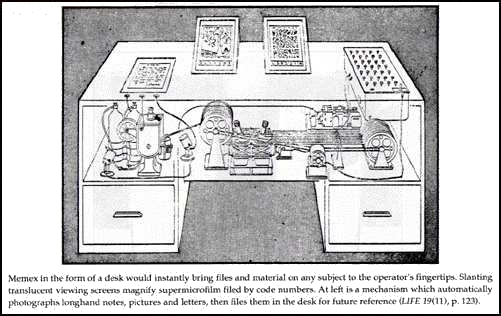
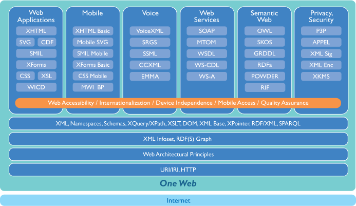
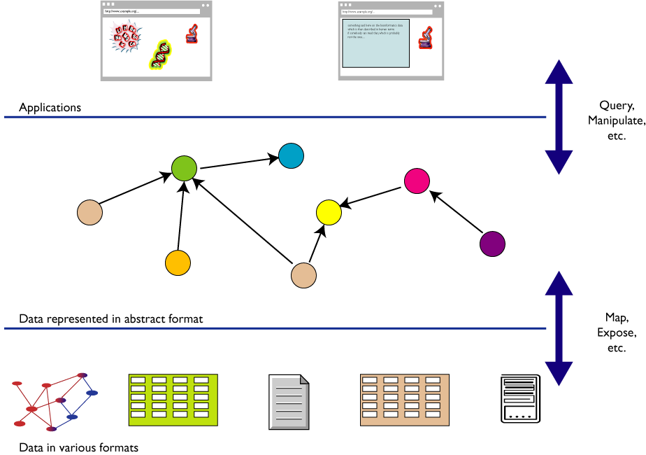
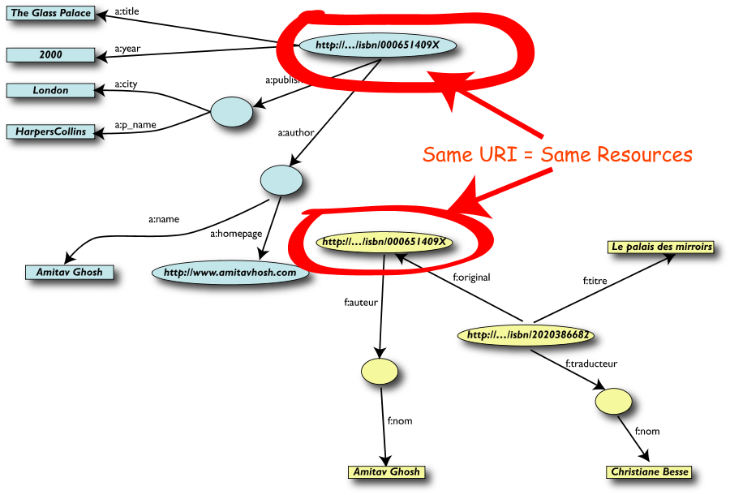
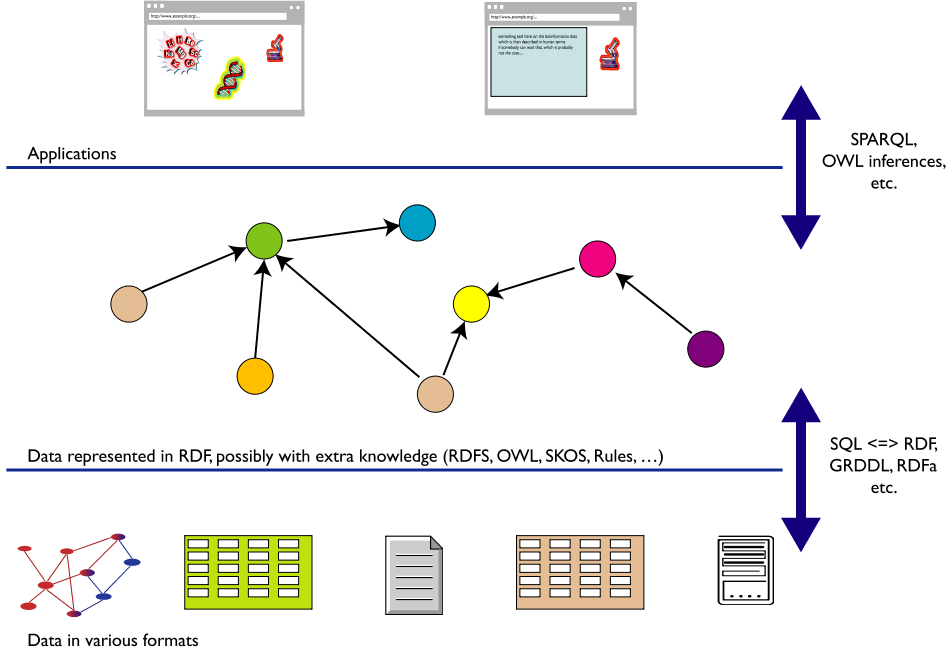

Ringraziamenti
- Questa presentazione utilizza anche materiale
proveniente da:
- presentazioni tenute da Ivan Herman,
W3C Semantic Web Activity Lead
- presentazioni e articoli scritti da F. R. A.
(Bob) Hopgood, Visiting Professor, School of
Technology, Oxford Brookes University
- pagine Web (Wikipedia e altre)
- Il materiale di questa presentazione può
essere riutilizzato nel rispetto delle leggi sul
copyright e delle regole del W3C
L’invenzione del web
-
Non un Eureka
-
non la mitica mela di Newton
- la potenza di combinare le idee in modo
libero ("weblike") ...
- risposta a una sfida
- combinazione di idee e realizzazioni da parte anche di
molti altri
- finalmente un' idea nuova
Un processo di accrescimento, non la soluzione
lineare di una serie di problemi ben definiti.
Internet
Tutto comincia guardando alla luna…
…e con la gara per lo spazio

4 ottobre 1957: lancio dello Sputnik
ARPANET…
- 4 ottobre 1957: lancio dello Sputnik
- 7 febbraio 1958: il dipartimento della difesa USA
avvia il progetto ARPA (Advanced Research
Project Agency)
- 1962: J.C.R. Licklider capo di ARPA per
migliorare l' uso militare della computer technology
- 1969: il primo collegamento: UCLA-Stanford
- 1970: le prime LAN (ethernet a Xerox PARC)
- 1972: prima dimostrazione pubblica di
ARPANET
- Dicembre 1974: prima specifica di TCP
(Transfer Control Protocol) per internetworking
… nel 1969…

- UCLA: Network Measurement Center
- SRI: Network Information Center
- UCSB: Culler-Fried interactive mathematics
- Utah: 3D graphics
…e Internet
- luglio 1977: dimostrazione a grande scala di
internetworking mediante ARPANET
-
ISO/OSI (Open System Interconnection)
- Internet al CERN
- CERNET: protocolli definiti su base locale
- 1981-83: IP per comunicazione via satellite (RAL,
CERN e Pisa)
- 1983: Ethernet al CERN
- 1984: implementazione pilota di TCP/IP
- 1989: CERN connesso a Internet
- 1990: CERN più grosso sito Internet in
Europa
Nel 1989 Tim Berners-Lee può creare il World Wide
Web basato su distributed computing e
Internet.
Ray Tomlinson: la magica @
home page: http://openmap.bbn.com/~tomlinso/ray/home.html
- 1971: crea un programma di posta per inviare
messaggi su una rete distribuita
- 1972: estende il programma agli utenti ARPANET,
usando il simbolo "@" come parte dell'
indirizzo
SGML (breve storia del markup)
Il text retrieval
- La Naturalis Historia di Plinio il Vecchio
- In 37 libri
- Pubblicata nel 77 d.C.
- Il primo libro, pubblicato nel 79 d.C. dal nipote
Plinio il Giovane, contiene il sommario dei libri
successivi ed un elenco delle fonti per
ciascun libro
-
I primi metadati?
In principio fu lo scriptorium…

stat rosa pristina nomine, nomina nuda tenemus
…e i manoscritti

Bibbia, in latino. Manoscritto in pergamena della prima
metà del sec. XIII.
(http://www.regione.sicilia.it/beniculturali/bibliotecacentrale/tesori/immagini/t14a.jpg
e
http://www.regione.sicilia.it/beniculturali/bibliotecacentrale/tesori/immagini/t15b.jpg)
Poi venne Gutenberg…

(http://upload.wikimedia.org/wikipedia/commons/b/b0/Gutenberg_Bible.jpg)
… e nacque il markup
- Il temine deriva dalla pratica dell' editoria
tradizionale
- Il marking up dei manoscritti consiste nell'
aggiungere istruzioni simboliche a margine dei
manoscritti
- A cura di personale specializzato e correttori di
bozze
|
|
Paragrafo
|

|
Diminuire lo spazio orizzontale
|

|
Inserire il testo a margine
|

|
In maiuscolo
|
|
Spostare a sinistra
|

|
Spostare a destra
|
Nasce il "generic coding"
-
William Tunnicliffe della Graphic
Communications Association (GCA)
- compagnia privata
- edizione delle pagine gialle
- impaginazione ex novo ogni anno
- presentazione dal titolo: "The Separation of
Information Content of Documents from their
Format" ad un meeting del Canadian Government
Printing Office nel settembre 1967
- GCA inizia il progetto GenCode
- markup generalizzato basato sulla struttura
gerarchica del documento
- tentativo di standardizzazione di un insieme di
elementi comuni
GML
- Charles Goldfarb, Edward
Mosher e Raymon
Lorie in IBM iniziano lo
sviluppo di Generalized Markup Language (GML)
- Possibilità di definire il proprio markup
- Possibilità di validare il documento rispetto
ad una Document Type Definition
- Per la prima volta tagging gerarchico con apertura e
chiusura
- Quali tag sono ammessi e dove
- I tag possono essere omessi se la loro posizione
è ovvia
GML: un esempio
:book.
:body.
:h1.Introduzione
:p.Il GML supportava contenitori gerarchici, come
:ol.
:li.Liste ordinate (come questa),
:li.Liste non ordinate, e
:li.Liste di definizione
:eol.
:p.e strutture semplici
:p.È stato possibile omettere i tag di chiusura
per gli elementi "h1" e "p", grazie al principio di minimalizzazione.
SGML
- Vedi Storia
- 1978: ANSI inizia il lavoro su uno standard per la
descrizione di testi basata su GML (con il supporto di
GCA)
- Tunnicliffe convince la US Navy a standardizzarsi
sull' initial SGML Draft
- 1983: Working Draft accettato da DoD e IRS (US
Internal Revenue Service)
- 1984: Passaggio all' ISO
- 1985: Draft International Standard (DIS)
- Anders Berglund al CERN implementa il DIS e usa SGML
per il testo dell' IS
- 1986: SGML (ISO 8879)
-
SGML declaration: definisce i delimitatori
per il markup
-
Document Type Definition: struttura e
regole per il markup del documento
-
Documento: fa riferimento ai due
precedenti, input manuale, tagging non strettamente
vincolante, parser più complesso
SGML al CERN
<BODY>
<H1>Introduction
This manual describes how to build a distributed system using the
Remote Procedure Call system developed in the Online Group
of the DD Division of CERN, the European Particle Physics Laboratory.
<h2> The system
The remote procedure call product consists of two essential parts:
an RPC compiler which is used during development of an application,
and the RPC run time system, which is part of the run time code.
Target systems supported are
<ul>
<li>VAX/VMS,
<li>Unix (Berkley 4.3 or Ultrix or equivalent)
<li>stand-alone M680x0 (MoniCa) systems (Valet-Plus, etc)
<li>stand-alone M6809 systems
<li>M680x0 systems running RMS68K
<li>M680x0 systems running OS9
<li>The IBM-PC running TurboPascal or Turbo-C
<li>The Macintosh running TurboPascal or MPW
</ul>
Tipi di markup
James H. Coombs, Allen H. Renear, Steven J. DeRose:
Markup Systems and the Future of Scholarly Text
Processing (Communications of the ACM 30, November
1987; 933-47)
- Punctuational
- molte differenze stilistiche, ambiguo per il text
formatting
-
Presentational
- spaziatura orizzontale e verticale, interruzioni
di pagina, numerazione dei paragrafi
- in genere affidata al text formatter per le parti
ripetitive, ma integrata da modifiche "locali"
-
Procedural
- comandi che specificano come formattare il testo,
es.
.sk 3 a; .in +10 -10; .ls 0; .cp 2;
- tipicamente associato ad un formattatore batch
(nroff/troff, TeX)
- in molti sistemi coesistono comandi di editing
"presentational" e "dot commands"
-
Descriptive
- gli autori identificano il tipo di
porzioni di testo
- per preparare la versione per la presentazione il
text formatter legge un insieme di regole scritte in
un sistema di "procedural markup"
- presentazioni diverse si ottengono modificando le
regole
- la metafora dello style sheet orienta gli autori
verso la presentazione piuttosto che verso il ruolo
delle entità nel documento
- Referential
- fa riferimento a entità esterne al
documento
- viene sostituito da queste entità nella
fase di processing
- Metamarkup
- controllo dell' interpretazione del markup
- estensione del vocabolario del markup descrittivo
Hypertext
Vannevar Bush
- 1927: computer analogico per la risoluzione di
equazioni
- 1930: Analizzatore differenziale (meccanico)
- 1935: Analizzatore differenziale
(elettro-meccanico):
- 100 tonnellate,
- 2000 valvole,
- 150 motori,
- oltre 300 Km di cavi.
- Utilizzato nel progetto Manhattan.
- circa 1940: Rapid Selector, memorizzazione di
microfilm e information retrieval
- 1945: As We May Think (in Atlantic
Monthly, Luglio 1945))
Il Memex

A memex is a device in which an individual stores his
books, records and communications and which is
mechanized so that it may be consulted with exceeding
speed and flexibility. It is an enlarged
intimate supplement to his memory.
The memex "affords an immediate step, however, to
associative indexing, the basic idea of which
is a provision whereby any item may be caused at will
to select immediately and automatically another. This
is the essential feature of the memex. The process
of tying two items together is the important
thing."
(Una riproduzione dell' articolo a: http://www.multimedialab.be/doc/citations/bush_aswemaythink.pdf
o copia locale a: bush_aswemaythink)
Douglas (Doug) Englebart
- Sempre in anticipo sui tempi
- Nel 1960 inventa il mouse
- "augmenting human intellect"
- Tra il 1960 e il 1970 sviluppa il sistema
NLS (oNLine
System), prima implementazione dell'
ipertesto.
- NLS è ilprimo sistema che utilizza il
mouse
- Famosa la demo
del 1968 alla Fall Joint Computer Conference in San
Francisco
Ted Nelson e la definizione di ipertesto (1965)
 A
body of written or pictorial material interconnected in a
complex way that it could not be conveniently represented
on paper. It may contain summaries or maps of its
contents and their interrelations; it may contain
annotations, additions and footnotes from scholars who
have examined it.
A
body of written or pictorial material interconnected in a
complex way that it could not be conveniently represented
on paper. It may contain summaries or maps of its
contents and their interrelations; it may contain
annotations, additions and footnotes from scholars who
have examined it.
Progetto Xanadu (1965-1999):
- Pay-per-link
- Bi-directional links
- Universo dei documenti
- Progetto durato oltre 32 anni
Talvolta i risultati migliori si ottengono
ridimensionando gli obiettivi
Tim e Ted si incontrano nel 1992, e Tim salda il debito
per la copia di Literary Machines.
Tim Berners-Lee
Brevi note biografiche
-
Biografia
di Tim
- nato a Londra, l' 8 giugno 1955
- figlio di Mary Lee e Conway Berners-Lee, due
matematici che lavoravano nel gruppo che sviluppava il
Ferranti Mark 1
- 1973-76: laurea in fisica (Queens College, Oxford)
- 1980: breve lavoro di consulenza al CERN
- 1984: di nuovo al CERN
- 1989: presenta una proposta di progetto
- 1990: scrive il brimo browser
- 1994: fonda il World Wide Web Consortium
Il tarlo del meccanismo associativo
Una volta discusse con il padre come rendere intuitivo il
computer, e metterlo in grado di realizzare le
associazioni tipiche della mente umana
Nel 1980, durante il primo soggiorno al CERN, matura il
concetto:
Suppose all the information stored on computers
everywhere were linked. Suppose I could program my
computer to create a space in which anything could be
linked to anything.
Qui puoi trovare tutto ...
I suoi genitori avevano una copia del libro di epoca
Vittoriana. Ne aveva ricevuta un' altra copia in regalo
dal suo padrino.
Staying in a House without Staff
It is for the guest to be as unobtrusively helpful to
host and hostess. The simplest thing is to ask exactly
how you may do this and also remember that there are
times when even the most saught-after guest may get in
the way of the routine domestic chores - it is often
easier, for example, to opt for breakfast in bed while
the hostess copes with the early morning routine.
In any household (even that of a millionaire), the
thoughtful guest does not make free with the
establishment's drinks, cigarettes, postal and
telephone facilities, nor does he or she demand
numerous additional services from the staff.
La sfida dei gruppi di lavoro al CERN
- Grossi gruppi distribuiti
- Progettazione e realizzazione di apparecchiature
complesse
- Progetti di lunga durata
- Analisi distribuita dei risultati
- Le difficoltà negli anni 80
- Varietà di computer e di sistemi di rete
- Accesso in modo diverso ai vari tipi di
informazione
- Grossi investimenti in termini di energie umane
- Frustrazione e inefficienza
- Una sfida per Tim Berners-Lee: come
consentire l' accesso alle varie fonti di informazione in
maniera semplice e coerente
Il primo periodo al CERN (1980)
Programmatore a contratto
- Difficoltà nel mantenere traccia delle
persone, dei programmi, dei vari sistemi
- Scrive, nel tempo libero, un programma per uso
personale: "Enquire-Within-Upon-Everything"
- Nodi e link
- Per creare un nuovo nodo occorre creare un link che
parte da un nodo già esistente
- Tutti i nodi possono essere collegati da link
- Occorre specificare il tipo di link
- Ogni nodo ha un titolo, un tipo, e
una lista di link tipati bidirezionali
- "ENQUIRE" era scritto in Pascal e girava su una Norsk
Data con sistema operativo SINTRAN-III
- Non usato su vasta scala
- Versione originale andata perduta
Il secondo periodo al CERN (1984-89)
- Scrive Tangle
- Scrive una procedura RPC
- Cerca di ricreare Enquire sul suo portatile (solo
link interni)
- 1989: scrive la proposta - nessuna risposta
…e HTML
- Nel 1989 Tim Berners-Lee propone la condivisione
di documenti
- Anders Berglund consiglia di adottare lo standard
SGML
- Viene definita una semplice DTD SGML, basata
sulla prima DTD pubblica, scritta da Charles Goldfarb,
sviluppandone una versione ipertestuale chiamata HTML
-
HTML nasce in tempi brevissimi
Il secondo periodo al CERN (1989-1994)
- marzo 1989: "Information
Management: A Proposal"
- Tre elementi fondamentali:universal resource
locator, protocollo per il fetch dei
documenti e document mark-up
- maggio 1990: ripropone il progetto - nessuna risposta
- 1990: Implementa il primo web browser su una macchina
Next
- 1991-93: Continua la progettazione e lo sviluppo del
Web al CERN
- raffinamento delle specifiche iniziali di URI,
HTTP e HTML
Il primo Web Browser (1)

Il primo Web Browser (2)

L’approccio
Dalla fisica:
Trovate le regole semplici che descrivono il
comportamento di oggetti semplici e piccoli
...
... si ha la chiave per spiegare il comportamento di
sistemi molto complessi e grandi
Definire le poche e semplici regole comuni dei
protocolli che permettono ai computer di
parlarsi tra di loro.
Tre concetti essenziali
-
URI
-
Universal Resource Identifier: cosa significa
come indirizzo.
È l' innovazione più
fondamentale del Web.
Qualunque programma Web lo utilizza quando segue un
link.
Una volta che un documento ha un URI, può essere
memorizzato su un server e ritrovato
da un browser.
Non esiste un archivio centralizzato di URI.
-
HTTP
-
Hypertext Transfer Protocol: la sequenza con
cui i computer interagiscono e si scambiano
informazioni.
La format negotiation permette la coesistenza
di tutti i tipi di formato.
-
HTML
-
Hypertext Markup Language: se due computer
usano lo stesso software per rappresentare i dati,
possono scambiarli in modo nativo, altrimenti, li
possono tradurre in HTML.
HTML descrive la struttura, non la
presentazione.
Tutto qui?
- Quando qualcuno, da qualche parte, rende disponibile
un' informazione, questa deve essere accessibile da
chiunque, con qualsiasi computer, in
qualsiasi paese (a meno di problemi di
autorizzazione)
- L' ipertesto globale era una prospettiva del
tutto nuova: accesso mediante navigazione
- La possibilità di puntare a qualsiasi risorsa
permette di implementare il meccanismo
associativo
- Il Web è uno spazio informativo universale, in
cui ognuno può accedere all' informazione e
modificarla (browser/editor)
Quello che fa la differenza…
- Ambiente totalmente decentralizzato
-
Interoperabilità
- Non autorità, ma
autorevolezza
Qualche curiosità
Come nasce il nome World Wide Web
-
Mesh o Information Mesh
-
troppo simile a mess
-
Mine of Information (MOI)
-
troppo egocentrico
-
The Information Mine (TIM)
-
anche più egocentrico!!
-
World Wide Web
-
nonostante molti pareri contrari
URI/URL
- Universal Resource Identifier
- Nel meeting IETF (1992) vengono sollevate opposizioni
al termine Universal
- Pragmaticamente, accetta Uniform invece di
Universal, e quindi nasce: Uniform Resource
Locator (URL)
Il rapporto con l’ accademia: Hypertext91
- Il lavoro viene rifiutato
- Almeno uno dei revisori afferma che: il sistema
proposto viola i principi architetturali su cui si basano
tutti i sistemi ipertestuali
- Riesce a ottenere la possibilità di dare una
dimostrazione
- Non tutti comprendono il fattore di scala
Tim e il successo economico
People have sometimes asked me whether I am upset that I
have not made a lot of money from the Web. In fact, I
made some conscious decisions about which way to take my
life. These I would not change - though I am making no
comment on what I might do in the future. What does
distress me, though, is how important a question it seems
to be to some. This happens mostly in America, not
Europe. What is maddening is the terrible notion that
a person's value depends on how important and financially
successful they are, and that is measured in terms of
money. That suggests disrespects for the researchers
across the globe developing ideas for the next leaps in
science and technology.
Core in my upbringing was a value system that put
monetary gain well in its place, behind things like
doing what I really want to do. To use net worth as
a criterion by which judge people is to set out our
children's sights on cash rather than on things that will
actually make them happy.
It can be occasionally frustrating to think about things
my family could have done with a lot of money. But in
general I'm fairly happy to let other people be in the
Royal Family role (as it were), as long as they don't
abuse the power they have as a result. It's not as
if I can just make decisions that change the Web ... but
I can try to get an entire industry to do it. My priority
is to see the Web develop in a way that will hold us in
good stead for a long time. If someone tries to
monopolize the Web - by, for example, pushing a
proprietary variation of network protocols - they're in
for fight.
[da Weaving the Web, p. 107-108]
Il W3C
L' evoluzione del Web
- Dal Web di Documenti ...
- ... verso un Web di dati e servizi che
sia:
- Meaning-ful
- on Everything
- for Everyone
- Interoperable
- ... e Trustworthy, Evolvable, Decentralized
World Wide Web Consortium (W3C)

“To lead the World Wide Web to its full potential
by developing protocols and guidelines that ensure
long-term growth for the Web”
- Fondato da Tim Berners-Lee nel 1994
- Definisce Recommendation aperte (Web
Standards)
- Svolge attività di formazione, sviluppa linee
guida…
-
È un forum neutrale per creare consenso
sugli standard web
- Gli standard proposti non derivano da posizioni
dominanti sul mercato
Alcuni principi guida del W3C
-
Le tecnologie Web dovrebbero
essere interoperabili
- il Web è basato su un ampio spettro di
tecnologie
- nessuna tecnologia può pretendere di
coprire tutte le esigenze del Web
- quindi l' interoperabilità delle
tecnologie è assolutamente necessaria
-
Gli Standard Web dovrebbero
essere degli "open standard", quindi
non-proprietari
-
Il Web deve essere accessibile a
tutti
Il W3C è internazionale
-
World Wide Web Consortium
-
I membri W3C
- sono la forza del W3C
- sviluppano le Recommendation
- guidano l' evoluzione del Web (Pieghevole)
W3C: gli obiettivi a lungo termine

-
Web for Everyone
- indipendentemente da hardware, software,
infrastruttura di rete, lingua madre, cultura,
posizione geografica, capacità fisiche o
mentali, …
-
Web on Everything
- non solo PC, ma anche Cellulari, PDA,
Televisione,…
-
Knowledge Base, Advanced data
searching and sharing
- informazione utilizzabile da esseri umani e
anche macchine
-
Trust and Confidence
- tecnologie per un ambiente collaborativo
- un Web con identificazione delle
responsabilità, sicurezza, fiducia,
riservatezza
Lo stack delle tecnologie W3C

L' attività dei Working Group
Nascita di una Recommendation
Il Web e le sue tecnologie: da HTML a XML
HTML: le caratteristiche
- Markup generalizzato e sostanzialmente
descrittivo
- Adotta la convenzione delle parentesi angolari
< e >
- I documenti possono essere preparati con un qualunque
editor di testo
- Offre un insieme definito e fisso di
elementi
-
Definizione rigorosa dopo alcuni anni
- Moltissime pagine sono diventate non valide
- L' adozione di un markup descrittivo
(flessibilità, estensibilità) è
stato uno dei fattori di successo del Web (De Rose)
I limiti di HTML
- HTML ottimizzato per facilità di
apprendimento
- Un solo tag set for tutte le applicazioni
- Semantica predefinita per ogni tag
- Strutture dati predefinite
- Assenza di validazione formale
- Supporto inadeguato per strutture a più
livelli
- HTML costituisce un compromesso tra potenza
e semplicità d' uso
- HTML molto adatto per applicazioni semplici
-
Poco adatto per applicazioni dai requisiti
più complessi:
- Raccolte di dati complesse o di ragguardevoli
dimensioni
- Dati con strutturazione ricca, da utilizzare in
vari modi, con ciclo di vita lungo
Perché XML?
Comparsa di nuove applicazioni Web "Data
centric"
-
Semantica dei tag più sofisticata e
adatta per utenti specialistici (ma XML ha
semantica?)
- Gestione delle transazioni sul Web
- Scambio di database
- Viste diverse degli stessi dati
- Personalizzazione dell' informazione mediante agenti
- Gestione di collezioni di documenti
- Editoria internazionale indipendente da piattaforma,
linguaggio e media
XML in breve
- EXtensible
Markup Language
- Definito nel 1998 dal W3C
- Tecnologia chiave del Web
<root>
<first>
<Subelement attr="xyz" attr2="qwr"/>
</first>
<second>
<AnotherSubelement>
ABC<Something attr="plk"/>
</AnotherSubelement>
</second>
<third/>
</root>
|
- Nesting corretto
- Corrispondenza dei tag
- Elementi nulli
- Attributi racchiusi tra apici
- Well formed
- Validated
|
Un frammento di documento XML
(Ringrazio Andrea Marchetti e Fabio Vitali per avermi
fornito il sorgente XML)
- Con un editor grafico: [png] [pdf]
- In puro testo
<Legge id="urn:nir:stato:legge:1996-12-31;675">
<meta>
<descrittori><pubblicazione norm="19970108" num="5"/>
<urn>urn:nir:stato:legge:1996-12-31;675</urn>
<vigenza inizio="" id="v1"/>
</descrittori>
</meta>
<intestazione><tipoDoc>Legge</tipoDoc> <dataDoc norm="31121996">31
dicembre 1996</dataDoc> n. <numDoc>675</numDoc> <titoloDoc>Tutela delle persone
e di altri soggetti rispetto al trattamento dei dati personali</titoloDoc>
</intestazione>
<formulainiziale>
<h:p>La Camera dei deputati ed il Senato della Repubblica hanno
approvato:</h:p>
<h:p>IL PRESIDENTE DELLA REPUBBLICA</h:p>
<h:p>Promulga</h:p>
<h:p>la seguente legge:</h:p> </formulainiziale>
<articolato>
<capo id="cap1">
<num>Capo I</num>
<rubrica>PRINCIPI GENERALI</rubrica>
<articolo id="art1">
<num>Art. 1</num>
<rubrica>Finalità e definizioni</rubrica>
<comma id="art1-com1">
<num>1)</num>
<corpo>La presente legge garantisce che il trattamento dei
dati personali si svolga nel rispetto dei diritti, delle libertà fondamentali,
nonchè della dignità delle persone fisiche, con particolare riferimento alla
riservatezza e all'identità personale; garantisce altresì i diritti delle
persone giuridiche e di ogni altro ente o associazione </corpo>
</comma>
Un frammento di DTD
<!ENTITY % docarticolato "(meta,intestazione,formulainiziale,
articolato,formulafinale,conclusione,annessi?)" >
<!ELEMENT Legge %docarticolato; >
<!ATTLIST Legge %idnorma; %status; >
<!ELEMENT LeggeCostituzionale %docarticolato; >
<!ATTLIST LeggeCostituzionale %idnorma; %status; >
<!ELEMENT DecretoLegge %docarticolato; >
<!ATTLIST DecretoLegge %idnorma; %status; >
<!ELEMENT DecretoLegislativo %docarticolato; >
<!ATTLIST DecretoLegislativo %idnorma; %status; >
<!ELEMENT DecretoMinisteriale %docarticolato; >
<!ATTLIST DecretoMinisteriale %idnorma; %status; >
<!ELEMENT RegioDecreto %docarticolato; >
<!ATTLIST RegioDecreto %idnorma; %status; >
<!ELEMENT Dpr %docarticolato; >
<!ATTLIST Dpr %idnorma; %status; >
<!ELEMENT Dpcm %docarticolato; >
<!ATTLIST Dpcm %idnorma; %status; >
Da DTD a XML Schema
- Sono codificati in XML (non vi è una
sintassi specifica, un editore ad hoc, è possibile
la validazione, ...)
- Si possono definire gerarchie di Element
type
-
Data type abbastanza sofisticati. È
possibile:
- definire vincoli sui data type (p.es. un
attributo deve essere un intero positivo minore di
65)
- definire gerarchie di data type (es. sottotipo
per restrizione)
- definire data type specifici (es. numeri di
telefono, stringhe di soli caratteri, pattern
specifici, ...)
Un frammento di XMLSchema NIRLight
Il Web non è solo tecnologia
“The Web is more a social creation than
a technical one. I designed it for a social effect - to
help people work together - and not as a
technical toy. The ultimate goal of the Web is to
support and improve our weblike existence in
the world.”
(Tim Berners-Lee - Weaving the Web, p. 123)
-
Valore sociale del Web: comunicazione
interpersonale, commercio, condivisione di
conoscenza
- Rendere questi benefici disponibili a tutti,
indipendentemente da hardware, software, infrastruttura
di rete, lingua madre, cultura, posizione geografica,
capacità fisiche o mentali
I limiti del Web attuale
- Nel web tradizionale si rappresenta l'
informazione utilizzando:
- linguaggio naturale
- grafica, elementi multimediali, struttura della
pagina
- Spesso è necessario combinare le
informazioni (provenienti da fonti diverse)
-
Per gli esseri umani è facile ...
- dedurre fatti da informazioni incomplete
- creare e seguire associazioni mentali
- provare varie esperienze sensoriali
- aggregare le informazioni indipendentemente dalle
tecnologie utilizzate
- ... ma le macchine non sono intelligenti!
- non possono utilizzare informazioni parziali
- hanno difficoltà ad aggregare informazioni
strutturate in forma diversa
L' integrazione dei dati

Per un processo automatico
- Occorre combinare dataset diversi
- ognuno di essi può provenire da un
qualunque sito web
- possono avere originariamente formati
differenti (MySQL, fogli excel, XHTML, etc)
- possono avere nomi diversi per le
relazioni (multilinguismo)
- È necessario rappresentare in modo formale
la conoscenza
-
Il Semantic Web fornisce le tecnologie per rendere
possibile questa integrazione
L' architettura del Semantic Web

-
Il Semantic Web ...
-
- è un' infrastruttura basata su metadati
per poter svolgere ragionamenti sul Web
-
estende, non sostituisce il web attuale
-
I metadati sono:
-
- Informazioni, elaborabili automaticamente
(machine understandable), relative a una
risorsa web o a qualche altra cosa
- ... data about data
- ... informazioni che possono essere utilizzate da
intelligent software agents per fare un uso
appropriato delle risorse
- ... dati ...
- ... che possono essere descritti da altri
metadati ...
Perché i metadati?
- Nel Web di oggi tutte le informazioni sono "
machine readable"
- Nel Semantic Web le informazioni devono essere "
machine understandable". Quindi occorrono:
-
nomi non ambigui per le risorse (URI)
- un data model condiviso per esprimere i
metadati (RDF)
- un modo per accedere ai metadati sul Web
-
vocabolari condivisi (ontologie)
Elementi di RDF
Cosa è RDF?
-
Resource Description Framework
- strumento base per codifica,
scambio e riutilizzo di metadati
strutturati
- consente l' interoperabilità tra
applicazioni che si scambiano sul Web informazioni
machine-understandable
- un modello generale basato su triple, dette
"triplets", o "statement" (con un
formato machine readable come RDF/XML, Turtle, n3, RXR)
RDF è per il Semantic Web ciò che HTML
è stato per il web
Triple RDF
- Una tripla RDF
(s,p,o) è definita
in modo che:
- Le risorse s, p, o vengono anche dette
"subject", "predicate",
"object", o "subject",
"property", "object"
- Le risorse possono usare un qualunque URI;
per esempio, possono denotare un elemento
interno a un file XML sul Web, non solo una
risorsa "completa".
- Le triple RDF formano un grafo orientato
etichettato, o "directed, labelled graph"
(è questo il modo migliore per considerarle!)
Un esempio semplice di RDF (in RDF/XML)
<rdf:Description rdf:about="http://…/isbn/2020386682">
<f:titre xml:lang="fr">Le palais des mirroirs</f:titre>
<f:original rdf:resource="http://…/isbn/000651409X"/>
</rdf:Description>
(Nota: per semplificare gli URI sono stati usati i
namespace)
Un esempio semplice di RDF (in Turtle)
<http://…/isbn/2020386682>
f:titre "Le palais des mirroirs"@fr;
f:original <http://…/isbn/000651409X>.
Merging dei dati…

…e delle risorse identiche

Il ruolo fondamentale degli URI
- Gli URI rendono possibile il merge
-
Chiunque può creare (meta)dati su
qualunque risorsa sul Web, per esempio:
- lo stesso file XHTML può essere
annotato con altri termini
- è possibile aggiungere semantica alle
risorse Web esistenti utilizzando URI
- gli URI rendono possibile collegare (con
proprietà) i dati tra di loro
-
Gli URI sono la base del ruolo di RDF nel Web
RDFSchema
Perché RDF Schema?
- Consideriamo un esempio classico delle ontologie:
- prendiamo il termine "cane"
- "ogni cane è un mammifero"
- "«Attila» è un cane"
- etc.
- RDFS
- definisce risorse e classi
-
formalizza in RDF le relazioni di:
istanza, classe e
sottoclasse
- definisce le eventuali restrizioni (es.
dominio e codominio)
- ufficialmente: "RDF Vocabulary Description
Language"
- il termine "Schema" sopravvive per
ragioni storiche…
Ontologie (OWL)
Cos'è un' ontologia?
Jim Hendler
A set of knowledge terms, including the
vocabulary, the semantic interconnections and
some simple rules of inference and logic for
some particular topic
Studer et al. (1998)
An ontology is a formal, explicit specification of a
shared conceptualisation.
A 'conceptualisation' refers to an abstract
model of some phenomenon in the world by having
identified the relevant concepts of that
phenomenon.
'Explicit' means that the type of concepts
used, and the constraints on their use are explicitly
defined. For example, in medical domains, the concepts
are diseases and symptoms, the relations between them
are causal and a constraint is that a disease cannot
cause itself.
'Formal' refers to the fact that the ontology
should be machine readable, which excludes natural
language.
'Shared' reflects the notion that an ontology
captures consensual knowledge, that is, it is not
private to some individual, but accepted by a group.
Disaccordo o accordo?
- Definizioni diverse, ma accordo sul
concetto
- Un' ontologia include non solo i termini che sono
esplicitamente definiti in essa, ma anche la
conoscenza che ne può essere
derivata mediante un processo di
inferenza
- Un' ontologia cattura conoscenza consensuale
- "Little semantics goes a long way" (Jim
Hendler)
Il Semantic Web: la visione del W3C
-
Ipotesi e sfide
-
- il Web è intrinsecamente
distribuito
- le macchine possono accedere ad un insieme
strutturato di informazioni e a un insieme di
regole di inferenza da utilizzare per il
ragionamento automatico
- per ragionare sui dati occorrono le
ontologie
- fornire un linguaggio per esprimere dati
e regole per ragionare sui dati
-
esportare sul web delle regole da
qualunque sistema di rappresentazione della
conoscenza
Ricapitolando…
-
Metadati
-
- informazioni, comprensibili dalla
macchina, relative a una risorsa web o a qualche
altra cosa
-
Resource Description Framework (RDF)
-
- strumento base per la codifica, lo
scambio e il riutilizzo di metadati
strutturati
- consente l'interoperabilità tra
applicazioni che si scambiano sul web informazioni
machine-understandable
-
RDFS
-
- può essere considerato un Web Ontology
Language semplice
-
Web Ontology Language (OWL)
-
- linguaggio per descrivere
proprietà, vincoli, cardinalità, etc.
- permette di esportare ontologie in modo
interoperabile
OWL: tre sottolinguaggi
-
OWL Lite
-
per rappresentare classificazioni gerarchiche
e vincoli semplici. Permette una migrazione
rapida per thesauri e altre tassonomie.
-
OWL DL
-
per utenti che desiderano la massima potenza
espressiva garantendo comunque la completezza
computazionale (tutte le conclusioni sono
computabili) e la decidibilità (tutte
le computazioni terminano in un tempo finito)
-
OWL Full
-
per utenti che desiderano la massima potenza
espressiva e la libertà sintattica di
RDF.
Non fornisce garanzie sui tempi di computazione, e
difficilmente sarà supportato nella sua
interezza da software che implementano il ragionamento
L' integrazione dei dati: il ruolo delle tecnologie

Conclusioni
- Il World Wide Web
- Un' invenzione a portata di mano
- Frutto del lavoro di tutti (come afferma
lo stesso Tim)
- Ancora molti margini di evoluzione (leading
the Web to its full potential)
- L' importanza del contesto
- Motivazioni tecniche e ideali
- Il W3C
- Il W3C guida l' evoluzione del Web,
grazie al contributo dei suoi membri
- Le tecnologie del Semantic Web (RDF,
RDFS, OWL) consentono di rappresentare,
esportare e condividere la conoscenza
in maniera interoperabile
- Le scelte strategiche, se tengono conto dell'
evoluzione della tecnologia, garantiscono la
salvaguardia dell' investimento
Sono orgoglioso di ...

Happy birthday, W3C

Tim Berners-Lee e Oreste Signore


{kind=link}
{kind=link}
{kind=link}
{kind=link}
{kind=link}
{kind=link}
{kind=link}